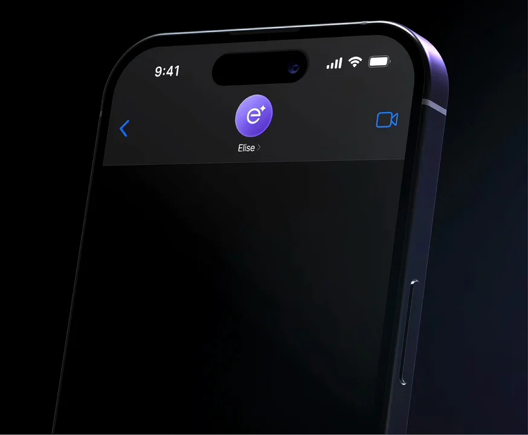
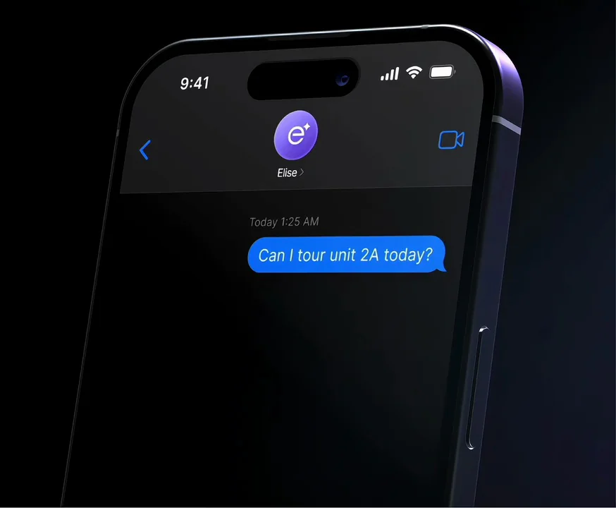
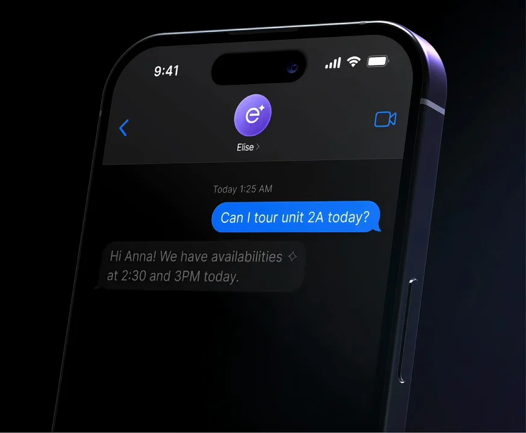
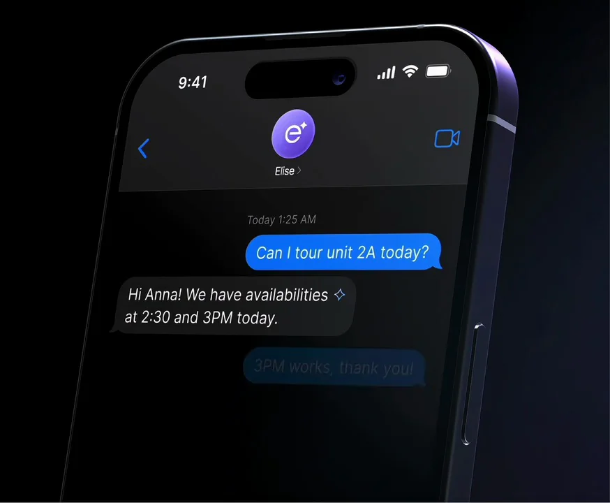
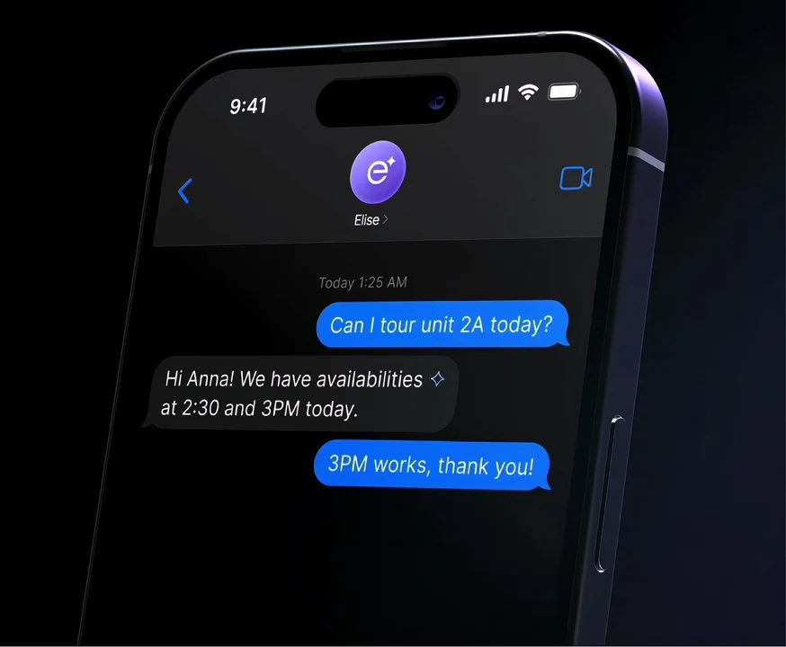

EliseAI / V183
EliseAI｜官网产品界面
用一次完整的预约对话说明助理价值：用户提出时间需求，助理给出两个选择，用户确认其中一个。
构图与编排 可播放 · 可替换内容
整体编排规则示例
查看 HTML 源码
<!doctype html><html lang="zh-CN"><meta charset="utf-8"><meta name="viewport" content="width=device-width,initial-scale=1"><title>EliseAI｜官网产品界面 · sequence</title><style>html,body{margin:0;width:100%;height:100%;overflow:hidden;background:#050609}canvas{display:block;width:100%;height:100%;object-fit:contain}</style><body data-mode="sequence"><canvas width="1000" height="600"></canvas><script src="data.js"></script><script src="common.js"></script><script src="scene.js"></script><script src="bridge.js"></script></body></html>画面元素手机边框助手头像用户气泡助理气泡输入栏
MOTION LANGUAGE
动作与构图
局部动作 · 构图规则
01
固定手机，按对话顺序添加气泡
固定手机，按对话顺序添加气泡规则示例
查看 HTML 源码
<!doctype html><html lang="zh-CN"><meta charset="utf-8"><meta name="viewport" content="width=device-width,initial-scale=1"><title>EliseAI｜官网产品界面 · sequence</title><style>html,body{margin:0;width:100%;height:100%;overflow:hidden;background:#050609}canvas{display:block;width:100%;height:100%;object-fit:contain}</style><body data-mode="clip" data-start="0.5" data-end="5.8"><canvas width="1000" height="600"></canvas><script src="data.js"></script><script src="common.js"></script><script src="scene.js"></script><script src="bridge.js"></script></body></html>手机轻微倾斜但聊天坐标跟随屏幕。用户蓝色气泡右对齐，助理深灰气泡左对齐；前一条稳定后才加入下一条。
02
三个消息足够形成闭环
第一条提出看房请求，第二条给两段可选时间，第三条确认。最后整体淡出回到空会话；不要在循环结束时倒放消息。
03
迁移到预约类产品
更换品牌头像、地点与两个时段。保持一问、一组选择、一次确认的容量，长消息先改写成两行以内。
SEQUENCE
段落与节奏
点击段落，定位到上方编排示意。





画面参考 · 离散静帧
KEEP THE RELATIONSHIPS
制作其他主题
- 替换预约业务、可选时间与头像；保留三条消息的因果。
制作约束
手机边框 / 助手头像 / 用户气泡 / 助理气泡 / 输入栏
- 手机轻微倾斜但聊天坐标跟随屏幕。用户蓝色气泡右对齐，助理深灰气泡左对齐；前一条稳定后才加入下一条。
- 第一条提出看房请求，第二条给两段可选时间，第三条确认。最后整体淡出回到空会话；不要在循环结束时倒放消息。
- 更换品牌头像、地点与两个时段。保持一问、一组选择、一次确认的容量，长消息先改写成两行以内。